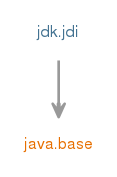

Module jdk.jdi
Java调试接口（JDI）是一种高级别的Java API，它为调试器和需要访问（通常为远程）虚拟机的运行状态的类似系统提供有用的信息。
JDI提供对运行的虚拟机的状态，类，数组，接口和原始类型以及这些类型的实例的内省访问。
JDI还提供对虚拟机执行的显式控制。 能够暂停和恢复线程，并设置断点，观察点等异常，类加载，线程创建等的通知检查挂起的线程的状态，局部变量，堆栈回溯等的能力
JDI是Java Platform Debugger Architecture (JPDA)的最高层 。
该模块包括一个简单的命令行调试器， jdb 。
全球例外
本节记录适用于整个API的异常，因此不会在单个方法上记录。
注意：当满足指定的条件时，可能会抛出以下异常，但是仅当无法返回有效结果时才能保证它们被抛出。Any method on a
Mirrorthat takes aMirroras an parameter directly or indirectly (e.g., as a element in aList) will throwVMMismatchExceptionif the mirrors are from different virtual machines.Any method which takes a
Objectas an parameter will throwNullPointerExceptionif null is passed directly or indirectly -- unless null is explicitly mentioned as a valid parameter.
Any method on
ObjectReference,ReferenceType,EventRequest,StackFrame, orVirtualMachineor which takes one of these directly or indirectly as an parameter may throwVMDisconnectedExceptionif the target VM is disconnected and theVMDisconnectEventhas been or is available to be read from theEventQueue.Any method on
ObjectReference,ReferenceType,EventRequest,StackFrame, orVirtualMachineor which takes one of these directly or indirectly as an parameter may throwVMOutOfMemoryExceptionif the target VM has run out of memory.Any method on
ObjectReferenceor which directly or indirectly takesObjectReferenceas parameter may throwObjectCollectedExceptionif the mirrored object has been garbage collected.Any method on
ReferenceTypeor which directly or indirectly takesReferenceTypeas parameter may throwObjectCollectedExceptionif the mirrored type has been unloaded.
- 工具指南：
- jdb
- Module Graph:
- 
- 从以下版本开始：
- 9
- 另请参见：
- Java Platform Debugger Architecture (JPDA)
{kind=link}
-
-
Packages
Exports 软件包 描述 com.sun.jdi 这是Java调试接口（JDI）的核心包，它定义了值，类型和目标VirtualMachine本身的镜像以及自举设备。com.sun.jdi.connect 该包定义了使用JDI的虚拟机与目标虚拟机之间的连接。com.sun.jdi.connect.spi 该包包括用于开发新的TransportService实现的接口和类。com.sun.jdi.event 该包定义了JDI事件和事件处理。com.sun.jdi.request 该包用于请求在指定条件下发送JDI事件。
-
Services
Provides Type 描述 Connector 调试器和目标VM之间的连接方法。Uses Type 描述 Connector 调试器和目标VM之间的连接方法。TransportService 用于调试器和目标VM之间连接的传输服务。
-